Clasificando estrellas
Cómo un conjunto de líneas negras en un arcoíris se convirtió en el sistema de clasificación más famoso de la astronomía: los tipos espectrales OBAFGKM, las clases de luminosidad, las enanas marrones y el diagrama de Hertzsprung-Russell.
Si tomamos el espectro de dos estrellas —el arcoíris de su luz con sus líneas de absorción— veremos huellas digitales distintas. La pregunta central de esta clase es qué causa esas diferencias. La respuesta sorprende: no es la composición (casi todas las estrellas son ~75% hidrógeno y ~23% helio), sino la temperatura. De esa idea nace el tipo espectral, un termómetro estelar codificado en letras. Y al cruzar tipo espectral con luminosidad aparece el diagrama de Hertzsprung-Russell, el mapa donde las estrellas se ordenan solas.
Espectros y líneas de absorción
La huella digital de cada estrella, escrita en líneas negras.
El espectro óptico de una estrella es el trocito visible de su luz descompuesto por longitud de onda. Sobre ese fondo de colores aparecen líneas negras: las líneas de absorción. Cada línea es literalmente un fotón siendo absorbido: un electrón de algún átomo de la atmósfera estelar captura un fotón cuya energía coincide exactamente con la diferencia entre dos de sus niveles de energía, y salta al nivel superior. Ese fotón ya no llega a nosotros, y en su posición del espectro queda un “hueco” oscuro.
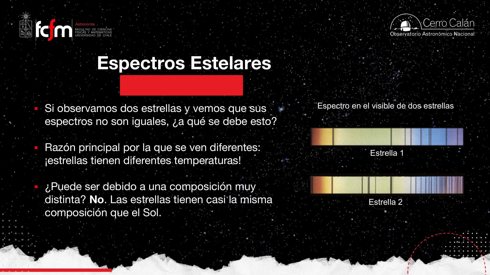
Los niveles de energía de un átomo están cuantizados: el electrón solo puede saltar si llega un fotón con la energía exacta de la diferencia entre niveles. Como cada elemento químico tiene su propio conjunto de niveles, cada elemento absorbe en longitudes de onda características. La línea cae en el espectro justo donde coincide con el salto. Si el fotón trae demasiada energía, puede ionizar el átomo: el electrón sale despedido y queda libre.
Una línea de hidrógeno más intensa no significa que la estrella tenga más hidrógeno en total. Significa que hay más átomos de hidrógeno con el electrón en el nivel adecuado para hacer esa transición específica. Y quién decide en qué nivel están los electrones es la temperatura. Este matiz es la clave de toda la clase.
El espectro es la respuesta en frecuencia del sistema “atmósfera estelar”: la luz continua del interior es la señal de entrada de banda ancha, y los átomos actúan como filtros notch extremadamente selectivos, cada uno sintonizado a frecuencias fijas conocidas de laboratorio. Identificar elementos en un espectro es como identificar qué filtros hay en una cadena de señal mirando qué frecuencias faltan a la salida.
Series del hidrógeno: Balmer, Lyman y Paschen
El mismo átomo, tres familias de saltos, tres regiones del espectro.
El hidrógeno —un protón y un electrón— es el elemento más abundante del universo y el más fácil de estudiar. Sus transiciones se agrupan en series según el nivel de energía donde comienza (absorción) o termina (emisión) el salto:
- Serie de Lyman: transiciones que involucran el nivel fundamental n = 1. Saltos grandes, fotones muy energéticos → caen en el ultravioleta.
- Serie de Balmer: transiciones que parten (o llegan) del nivel n = 2. Son las únicas que caen en el óptico — por eso dominaron la astronomía del siglo XIX, cuando solo existían instrumentos para luz visible.
- Serie de Paschen: transiciones con n = 3 como nivel base. Fotones menos energéticos → infrarrojo.
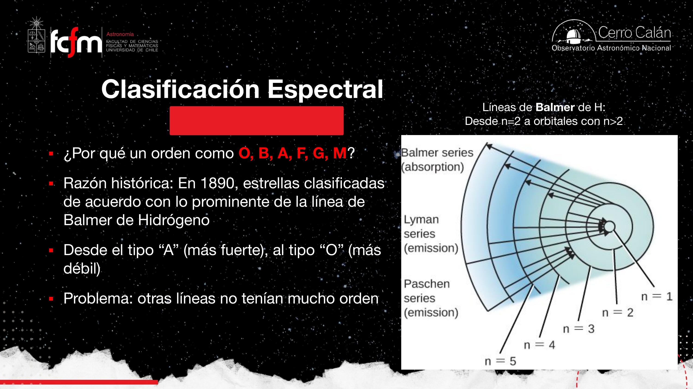
En el óptico solo vemos las líneas de Balmer. Que la línea Balmer de una estrella sea fuerte dice que muchos de sus átomos de hidrógeno tienen el electrón en el nivel n=2, listo para absorber. No dice que la estrella tenga más hidrógeno en general. La temperatura de la estrella determina la población de niveles — y con ella, qué líneas vemos.
Historia: Cannon, Payne y las computadoras de Harvard
Por qué las letras no están en orden alfabético.
1890: el orden alfabético que no funcionó
A finales del siglo XIX solo se podía observar en el óptico, así que la primera clasificación (hacia 1890) se hizo según lo prominente de la línea de Balmer del hidrógeno: tipo A para la línea más fuerte, bajando en orden alfabético hasta la O con la más débil. El problema: las líneas de otros elementos (helio, magnesio, calcio…) no seguían ese mismo orden. Una estrella A podía tener el hidrógeno más fuerte pero el magnesio débil, y la O el helio más fuerte estando al final de la lista. La clasificación no era coherente.
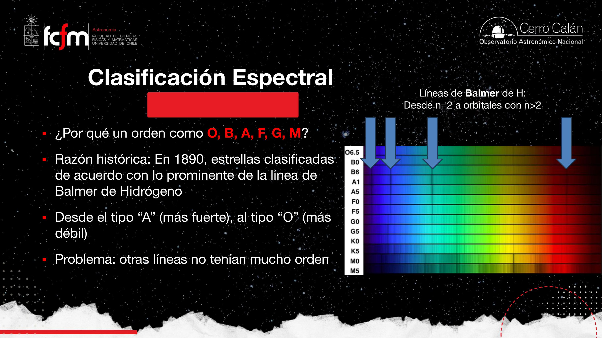
Annie Jump Cannon y las computadoras de Harvard
La clasificación masiva la hicieron las computadoras de Harvard: mujeres contratadas para medir, una por una, las líneas en placas fotográficas de vidrio. Muchas tenían formación formal en matemáticas; hoy varias son astrónomas reconocidas. Entre ellas destacó Annie Jump Cannon, que clasificó más de 250.000 espectros —probablemente el ser humano que más estrellas ha clasificado— llegando a un ritmo de ~100 estrellas por hora. En el proceso, letras redundantes se fueron eliminando y agrupando (desaparecieron la C, la D y otras), y quedó el conjunto que usamos hoy.
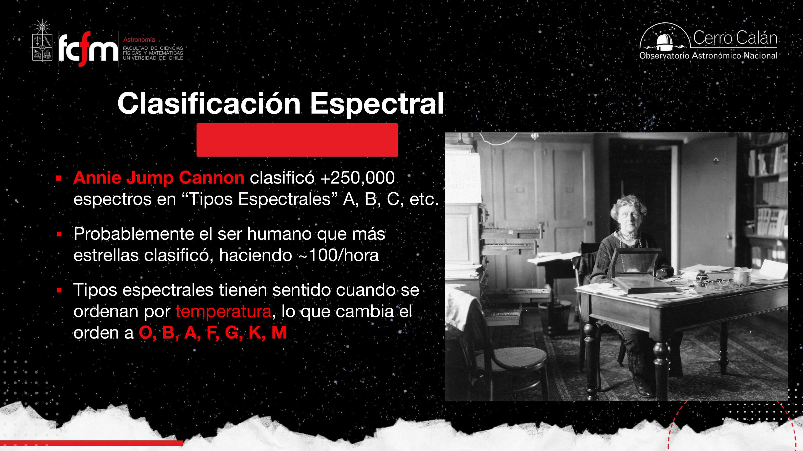
La profesora hizo circular placas de vidrio con espectros reales encontradas en el observatorio. Son negativos: el “arcoíris” aparece transparente y las líneas de absorción, como rayas. Los espectrógrafos antiguos usaban un prisma que dirigía la luz a una placa con emulsión fotosensible; luego había que revelarla y medir línea por línea con un visor con rejilla de referencia. El Observatorio Manuel Foster, en el cerro San Cristóbal, aún conserva un espectrógrafo de esa época instalado.
Cecilia Payne: la explicación teórica
Cecilia Payne-Gaposchkin dio el fundamento físico de la clasificación de Cannon: los distintos espectros se deben a diferencias de temperatura y no a diferencias de abundancias de elementos pesados. Demostró que las estrellas se componen mayoritariamente de hidrógeno (~75%) y helio (~23%), con solo trazas de otros elementos. Por eso se la considera la madre de la química estelar.
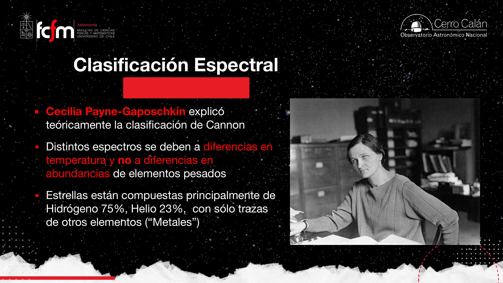
El sistema OBAFGKM: temperatura hecha letras
De la más caliente (O, azul) a la más fría (M, roja), con subtipos 0–9.
Reordenados por temperatura, los tipos espectrales quedan: O, B, A, F, G, K, M — de más caliente a más fría. Cada letra se subdivide en subtipos 0 a 9 (0 = más caliente dentro de la letra, 9 = más fría): el Sol es una G2, Próxima Centauri una M5.5. Como la temperatura también fija el color, el tipo espectral funciona como segundo termómetro, más fino que el color.
La clásica en inglés: “Oh Be A Fine Girl/Guy, Kiss Me” — extendida para las enanas marrones: “…Lovingly, Tenderly, Yearly”. En castellano circula, por ejemplo: “Otros Buenos Astrónomos Fueron Ganando Kilos Midiendo”. Cualquier frase propia sirve: lo importante es fijar el orden, porque no tiene lógica alfabética (es herencia histórica).
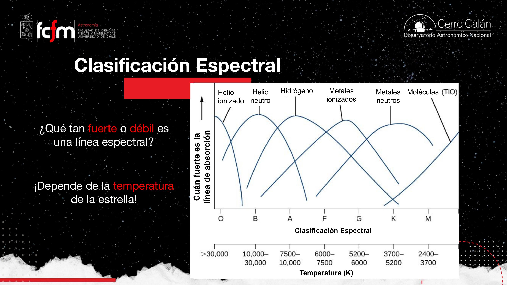
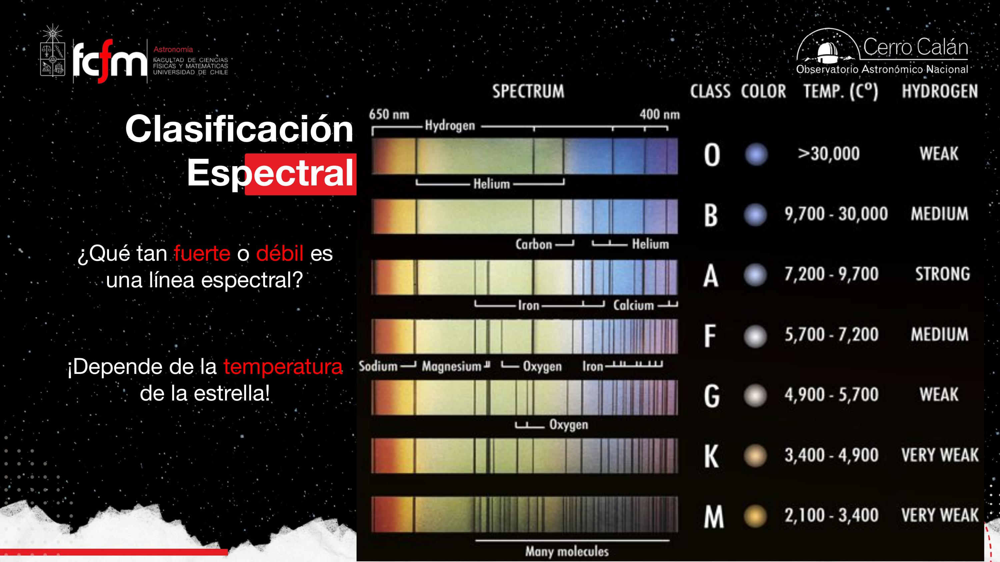
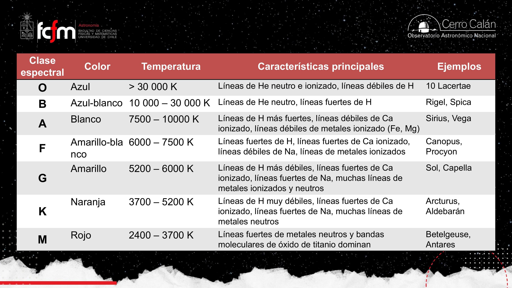
El tipo espectral mide temperatura, no tamaño ni etapa de vida. Betelgeuse (supergigante, ~3.500 K) y Próxima Centauri (enana roja, ~3.000 K) son ambas tipo M: comparten temperatura superficial siendo objetos radicalmente distintos. Distinguirlas requiere otro eje de clasificación: las clases de luminosidad.
Composición y “metales” en astronomía
75% hidrógeno, 23% helio… y el 2% que nos delata.
Casi todas las estrellas comparten composición: ~75% hidrógeno, ~23% helio y ~2% (o menos) de todo lo demás. En jerga astronómica, ese “todo lo demás” son los metales: cualquier elemento más pesado que el helio (carbono, oxígeno, calcio, sodio, hierro… todos “metales” para un astrónomo). Los elementos que vemos en el espectro son los de la atmósfera de la estrella; en el núcleo solo hay hidrógeno fusionándose en helio.
No lo fabricó el Sol: vino de otras estrellas. La nube donde nació el Sol ya estaba “contaminada” con metales producidos por generaciones estelares anteriores (por ejemplo, supernovas que explotaron y devolvieron material procesado al medio interestelar). Por eso las estrellas jóvenes son más ricas en metales que las viejas, formadas de material más prístino. De ahí la frase: somos polvo de estrellas — pero no del Sol: de las estrellas que murieron antes.
La metalicidad funciona como un timestamp de build: cada generación estelar “compila” metales nuevos y los libera al repositorio común (el medio interestelar). Una estrella pobre en metales viene de una versión temprana del material del universo; una rica en metales, de material muy reprocesado. Medir metalicidad en el espectro es leer la versión del material del que se formó la estrella.
Enanas marrones: los tipos L, T, Y
Objetos que “no se comieron las verduras”: demasiado livianos para ser estrellas.
A fines de los años 80 se descubrieron objetos aún más fríos que el tipo M, y hubo que agregar tres clases: L, T e Y. Son las enanas marrones, también llamadas “estrellas fallidas” u objetos subestelares: con menos de ~7,5–8% de la masa del Sol (~80 masas de Júpiter), su interior no alcanza la temperatura necesaria para fusionar hidrógeno. En su lugar fusionan isótopos del hidrógeno —como el deuterio— así que sí generan algo de energía propia, a diferencia de un planeta, que solo refleja luz.
- Límite superior (~80 MJúp ≈ 8% M☉): sobre esa masa se enciende la fusión de hidrógeno → estrella.
- Límite inferior (~13 MJúp): bajo esa masa ni siquiera fusiona deuterio → planeta gigante gaseoso.
- Ambos límites son difusos: aún se debate qué condiciones de formación dejan a un objeto como enana marrón. Se forman como las estrellas (colapso de nube molecular), no como los planetas (que nacen después, en el disco alrededor de la estrella).
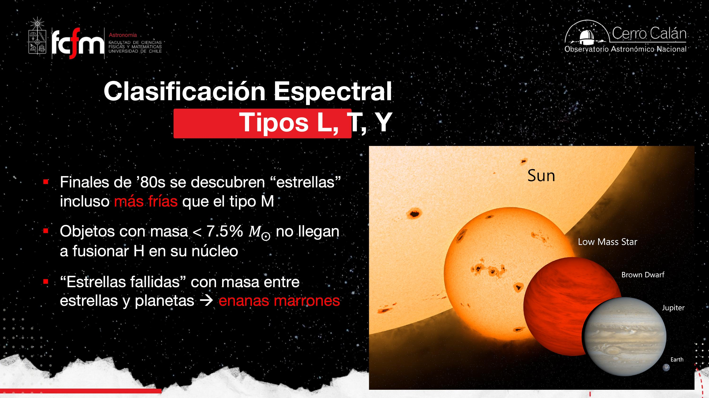
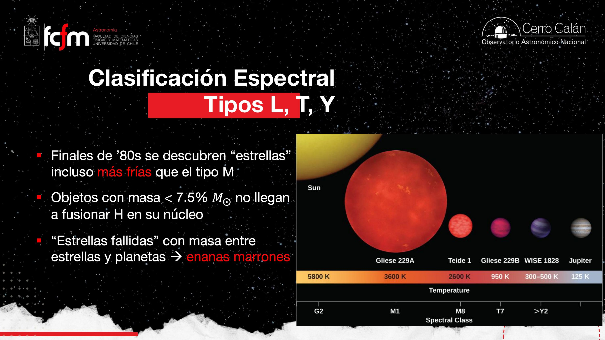
Las primeras enanas marrones se hallaron acompañando estrellas en sistemas binarios (eran demasiado débiles para verlas solas). En 1997, María Teresa Ruiz —primera Premio Nacional de Ciencias de Chile y profesora emérita de la U. de Chile— descubrió la primera enana marrón solitaria y la llamó Kelu (“rojo” en mapudungún). Años después se le detectó una compañera débil, pero al momento del descubrimiento no había forma de verla.
En un diagrama HR extendido, las enanas marrones continúan la secuencia hacia lo frío pero se doblan hacia el azul en los tipos L/T: sus atmósferas tienen tantas moléculas que absorben más flujo en el rojo. Viven en una “secuencia principal propia” mientras queman deuterio; cuando se les acaba, simplemente se enfrían sin evolucionar más.
Ancho de líneas y clases de luminosidad
El espectro también dice si la estrella es compacta o gigante.
Además de qué líneas aparecen (temperatura), importa el ancho de las líneas. La regla, corregida en vivo por la profesora durante la clase:
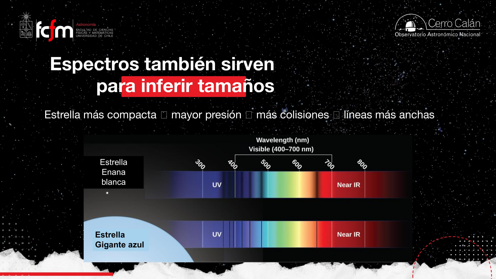
Las clases de luminosidad: números romanos
Como el tipo espectral solo codifica temperatura, se agregó una segunda dimensión: la clase de luminosidad, en números romanos, que distingue entre estrellas de secuencia principal, gigantes y supergigantes de igual temperatura. La designación completa de una estrella es letra + subtipo + romano: el Sol es G2 V, Spica B1 V, Betelgeuse M2 I.
| Clase | Significado | Ejemplos |
|---|---|---|
| I | Supergigantes (Ia más luminosas, Ib menos) | Betelgeuse, Antares, Rigel |
| II | Gigantes brillantes | Canopus |
| III | Gigantes | Arcturus, Aldebarán |
| IV | Subgigantes (saliendo de la secuencia principal) | Procyon |
| V | Secuencia principal (fusionando H → He). Es la clase más común: ~90% de las estrellas | Sol (G2 V), Spica (B1 V), Sirio (A1 V), Próxima (M5.5 V) |
| VI / VII | Subenanas / enanas blancas (las enanas blancas suelen llevar además el prefijo “D”) | Sirio B |
Sirio B (enana blanca) y Spica tienen la misma temperatura (~10.000 K), pero Sirio B brilla solo el 3% de lo que brilla Spica. Con igual temperatura, la única forma de brillar menos es ser más pequeña: Sirio B debe ser ~600 veces más chica. La luminosidad depende de la temperatura y del tamaño.
El diagrama de Hertzsprung-Russell
El mapa donde las estrellas se ordenan solas.
Con tipos espectrales (≈ temperatura) y distancias (≈ luminosidad) para muchas estrellas, Ejnar Hertzsprung y Henry Norris Russell notaron que ambas magnitudes están relacionadas. Al graficar luminosidad (eje Y) vs. temperatura (eje X), las estrellas no se reparten al azar: se agrupan en estructuras bien definidas. Ese es el diagrama HR, probablemente el gráfico más importante de la astrofísica estelar.
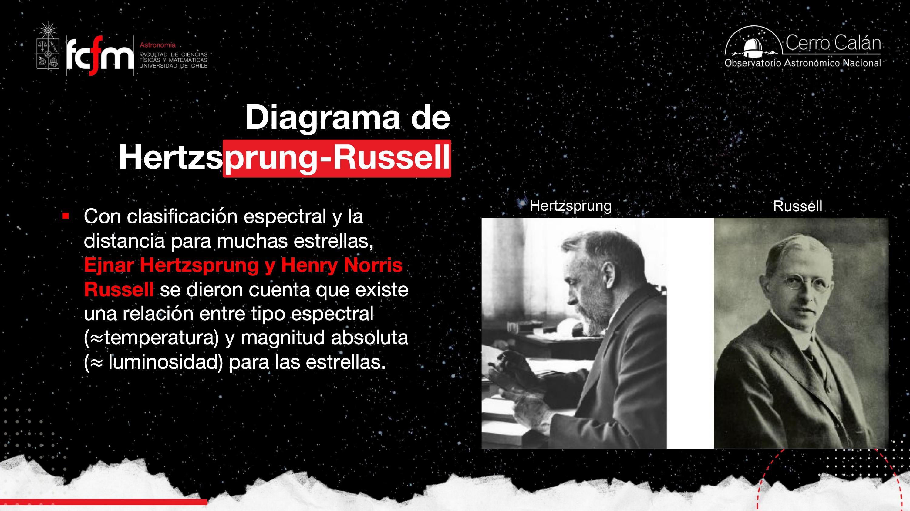
El diagrama HR es teórico: usa temperatura y luminosidad, propiedades intrínsecas que requieren conocer la distancia. Su análogo empírico es el diagrama color-magnitud: color (diferencia de magnitudes en dos filtros) vs. magnitud aparente — puro observable, sin distancia. Si al color-magnitud le aplicas la corrección por distancia, obtienes un HR. Ambos cuentan la misma historia.
Las poblaciones del diagrama
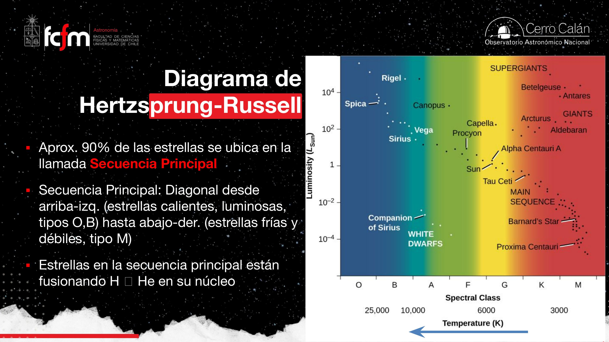
- Secuencia principal (~90%): estrellas fusionando hidrógeno en helio. Cuando se les agota el hidrógeno del núcleo, salen de la secuencia (se verá al final del curso).
- Gigantes y supergigantes rojas (~1%): arriba a la derecha — frías pero enormes, por eso brillan tanto. Betelgeuse: ~3.500 K pero 10⁵ L☉, con un radio ~1.000 veces el solar. Por su baja presión superficial, sus líneas espectrales son muy angostas.
- Enanas blancas (~10%): abajo a la izquierda — muy calientes pero muy poco luminosas, porque son diminutas. Líneas espectrales muy anchas.
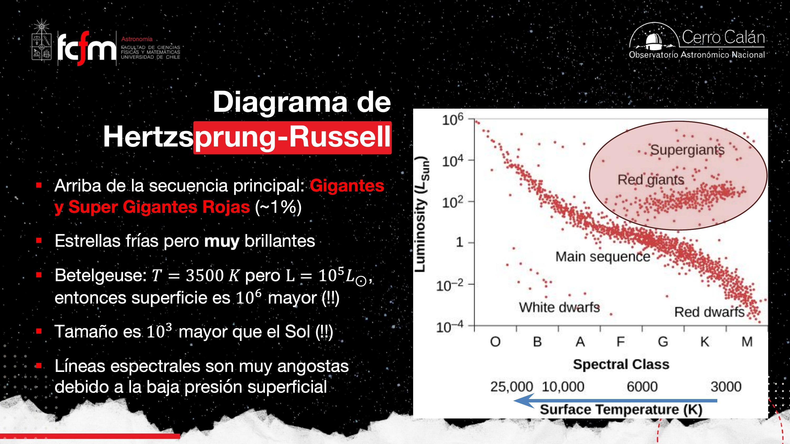
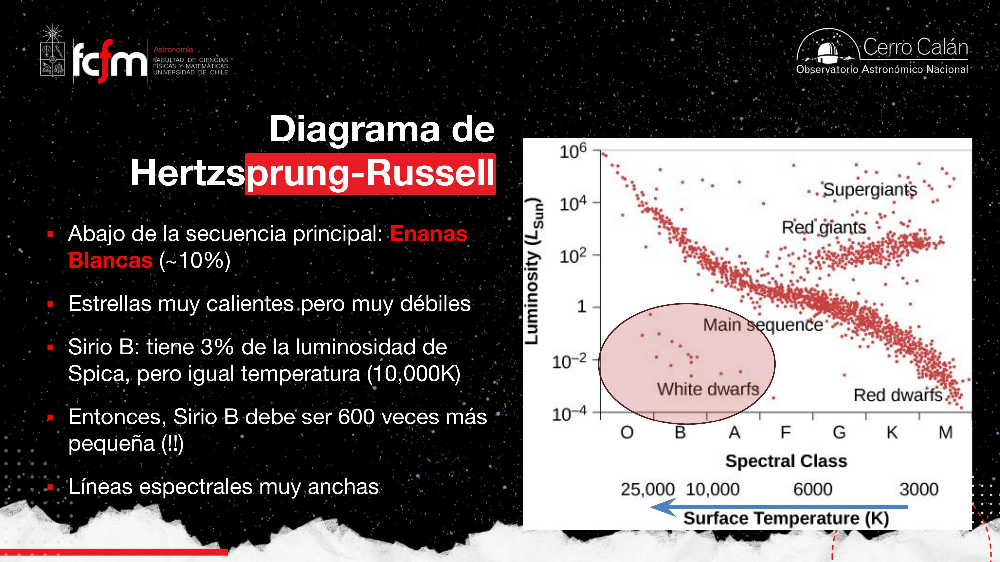
Inferir tamaños desde el diagrama: los isoradios
Combinando la ley de Stefan-Boltzmann con la definición de luminosidad superficial:
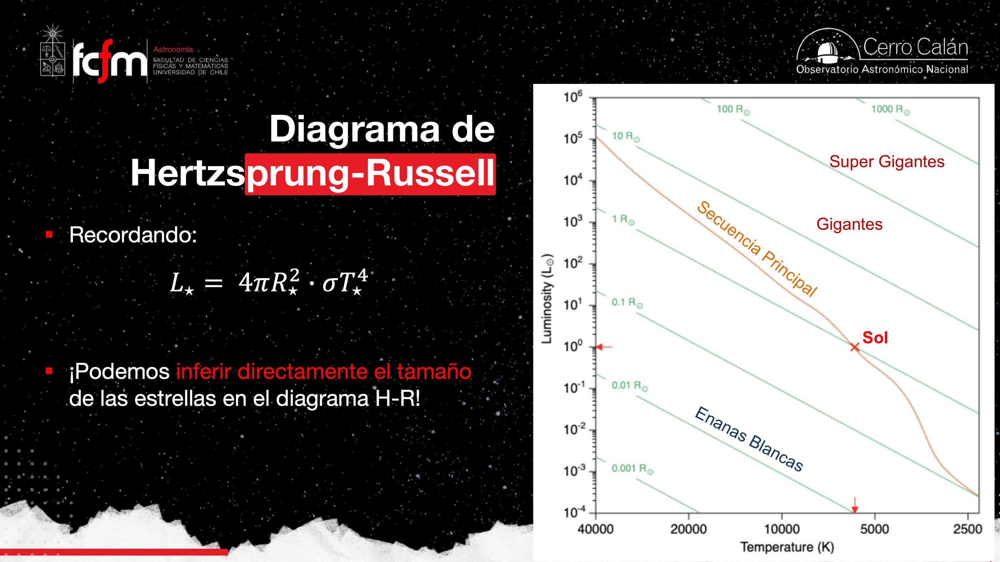
Los extremos del diagrama
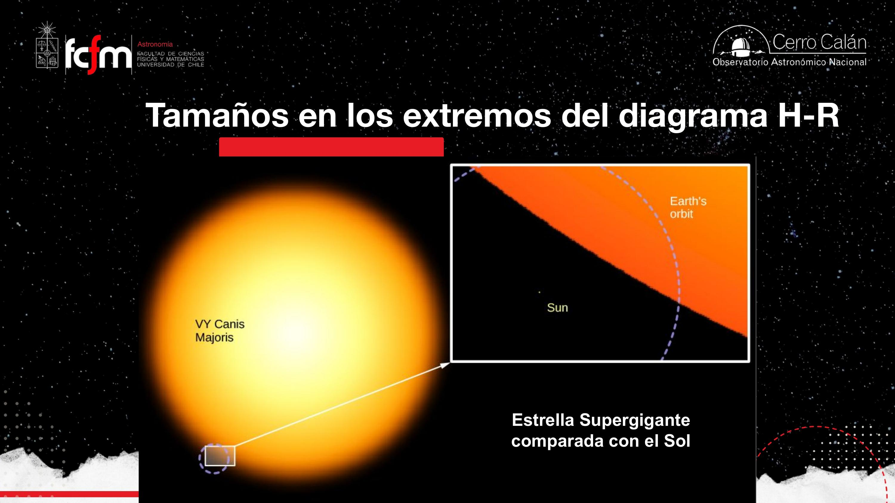
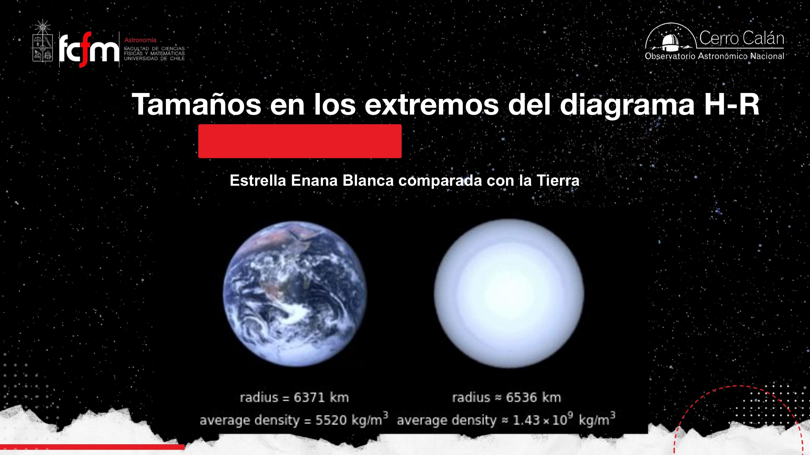
Las enanas blancas no fusionan nada: son remanentes que solo se enfrían. Aparecen cuando una estrella de baja masa muere expulsando suavemente sus capas exteriores (el Sol terminará así: “estornuda”, no explota). Las supernovas son cosa de estrellas de más de ~8 M☉, y su remanente es una estrella de neutrones o un agujero negro, no una enana blanca. Cuando una enana blanca termine de enfriarse quedará una enana negra — hipotéticas aún: se llegó a proponerlas como candidatas a materia oscura, pero no alcanzan para explicar toda la masa faltante.
Relación masa–luminosidad
El diagrama HR también ordena por masa — pero solo en la secuencia principal.
La masa es de las propiedades más difíciles de medir (binarias, modelos…). Pero existe una relación empírica que permite inferirla desde la luminosidad, gracias a este ciclo físico:
- Más masa → más gravedad tirando hacia adentro.
- Para mantener el equilibrio hidrostático (estrella redondita: gravedad compensada con presión), la estrella debe empujar más fuerte hacia afuera → sube la temperatura, sobre todo en el núcleo.
- Más temperatura en el núcleo → los átomos se mueven más rápido → más colisiones exitosas → mayor tasa de fusión de hidrógeno.
- Más fusión → más energía generada → más luminosidad.
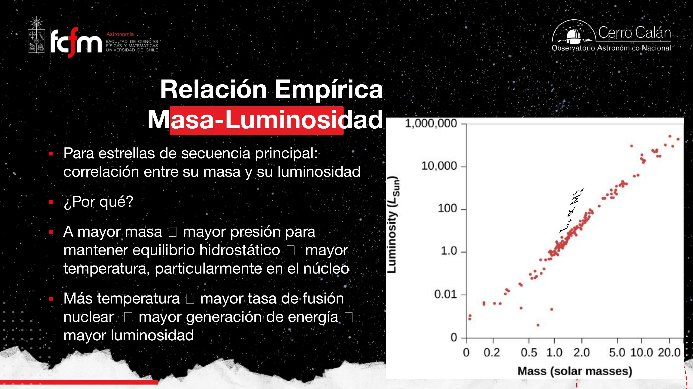
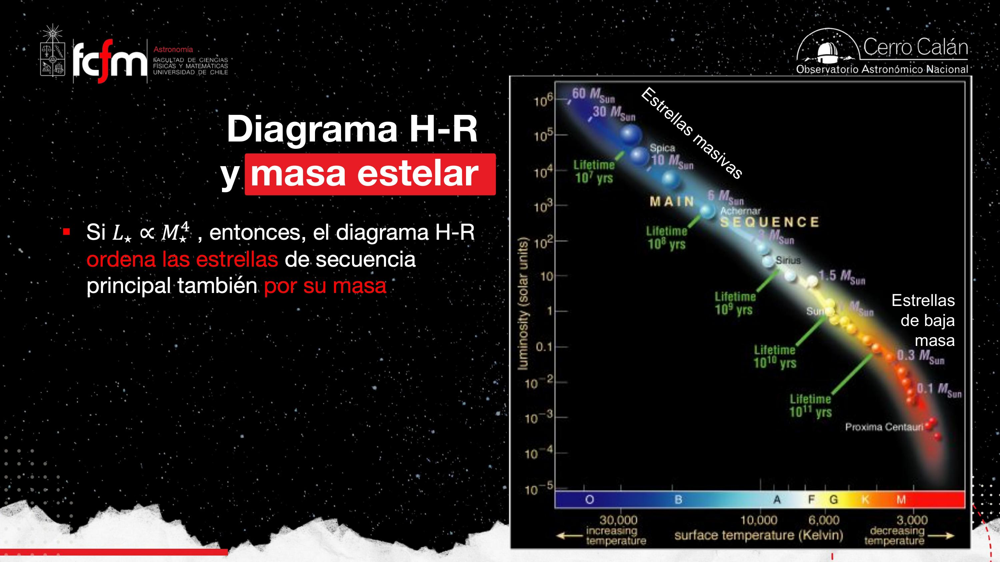
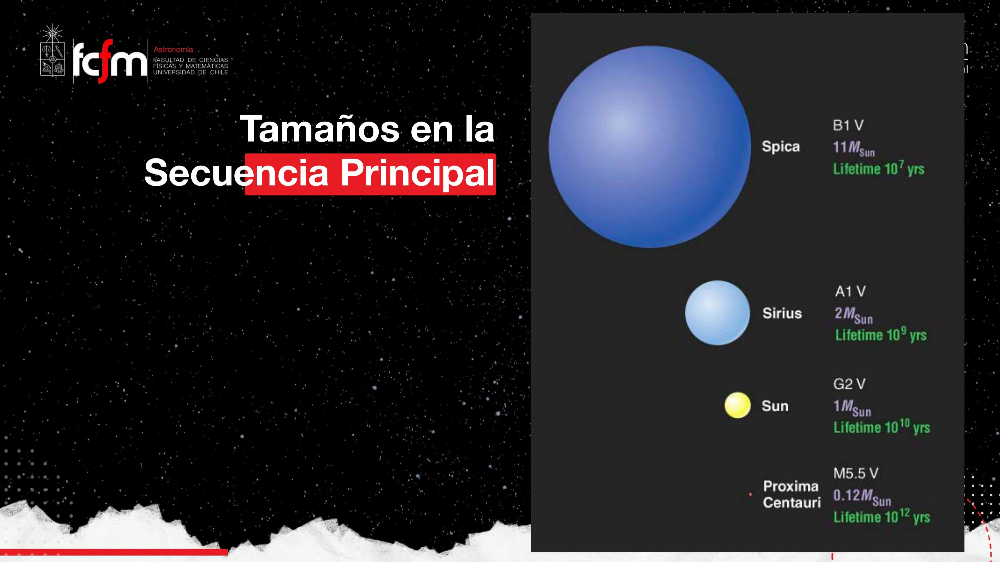
Es el clásico trade-off potencia/autonomía: el “estanque de combustible” crece linealmente con la masa, pero el “consumo” crece como M⁴. Duplicar la masa multiplica el consumo por 16 con solo el doble de combustible: la autonomía cae 8 veces. Por eso las estrellas O viven millones de años y las enanas M, billones — más que la edad actual del universo.
Resumen: cómo se mide cada propiedad
El cierre del Módulo I: todas las técnicas en una tabla.
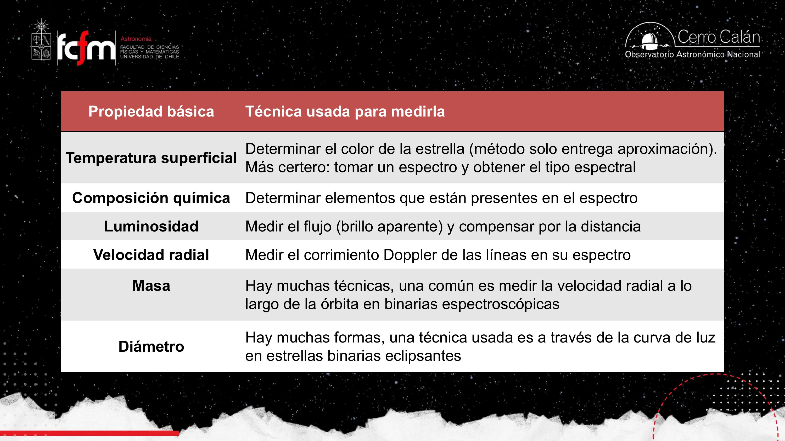
Nótese cuánto sale del espectro: temperatura (tipo espectral), composición (qué líneas), velocidad radial (corrimiento Doppler), tamaño aproximado (ancho de líneas) y, vía el diagrama HR, radio y masa. La espectroscopía es la navaja suiza de la astrofísica estelar. Para distancias, en este curso basta el paralaje (misiones Hipparcos y Gaia); en el curso de galaxias verán medidas con redshift para objetos más lejanos.
Con el Módulo I cerrado (propiedades y clasificación de estrellas), el Módulo II —con el profesor Ricardo Muñoz— mira alrededor de las estrellas: el medio interestelar, las moléculas en el espacio, las nubes moleculares y cómo nacen las estrellas.
Conceptos clave
Tabla de repaso rápido.
| Concepto | Qué es / valor | Por qué importa |
|---|---|---|
| Línea de absorción | Fotón absorbido por un electrón que salta de nivel | Huella digital de los elementos en la atmósfera estelar |
| Tipo espectral | O B A F G K M (+ L T Y), caliente → fría | Equivale a temperatura superficial; se lee del espectro |
| Subtipos 0–9 | 0 más caliente, 9 más fría dentro de cada letra | Resolución fina: el Sol es G2, Próxima M5.5 |
| Serie de Balmer | Transiciones del H desde/hacia n = 2 | La única serie del H visible en el óptico; base histórica de la clasificación |
| Lyman / Paschen | Series hacia n = 1 (UV) / n = 3 (IR) | El mismo átomo emite en bandas distintas según el salto |
| Annie Jump Cannon | Clasificó > 250.000 espectros (~100/hora) | Depuró el sistema de letras; el orden por temperatura lo hizo coherente |
| Cecilia Payne | Explicación teórica (1925) | Espectros distintos = temperaturas distintas, no composición |
| “Metales” | Todo elemento más pesado que el helio | Composición típica: ~75% H, ~23% He, ≤2% metales |
| Enanas marrones (L, T, Y) | 13–80 MJúp; fusionan deuterio, no H | Puente entre planetas y estrellas; Kelu-1 (M. T. Ruiz, 1997) |
| Ancho de líneas | Compacta → alta presión → líneas anchas | Permite inferir el tamaño del objeto desde el espectro |
| Clases de luminosidad | Romanos I–V (+ VII): I supergigante … V secuencia principal | Segunda dimensión: distingue gigantes de enanas de igual temperatura |
| Diagrama HR | Luminosidad vs. temperatura (T invertida) | Secuencia principal (~90%), gigantes (~1%), enanas blancas (~10%) |
| L = 4πR²σT⁴ | Stefan-Boltzmann aplicada a la estrella | Con T y L se infiere el radio (isoradios del HR) |
| L ∝ M⁴ | Relación empírica, solo secuencia principal | El HR también ordena por masa; vida ∝ M⁻³ |
| Enana blanca | Núcleo C/O desnudo; ~radio terrestre; ~10⁹ kg/m³ | Remanente de estrella de baja masa; solo se enfría |
Exámenes de práctica
10 exámenes de 5 preguntas (3 de alternativas autocorregibles + 2 de respuesta escrita).